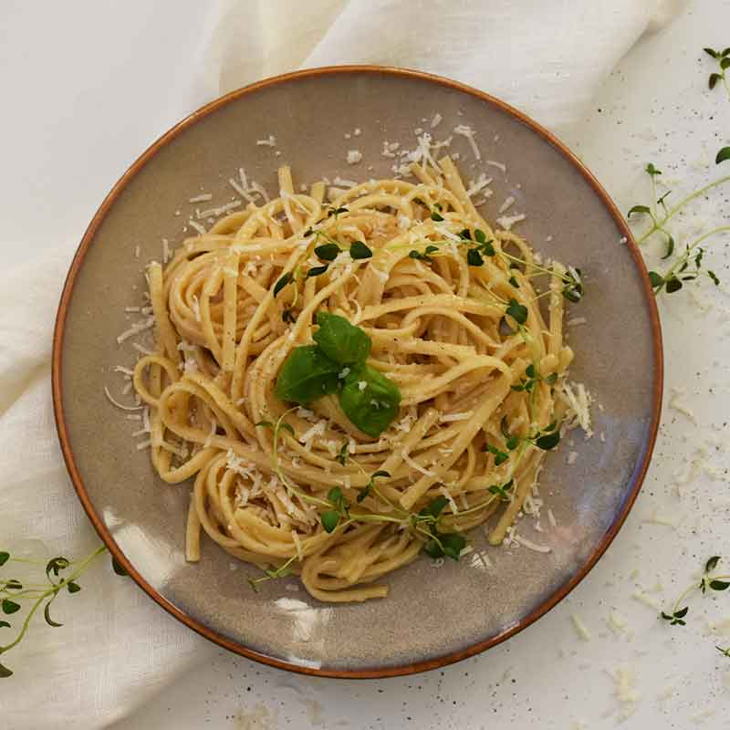
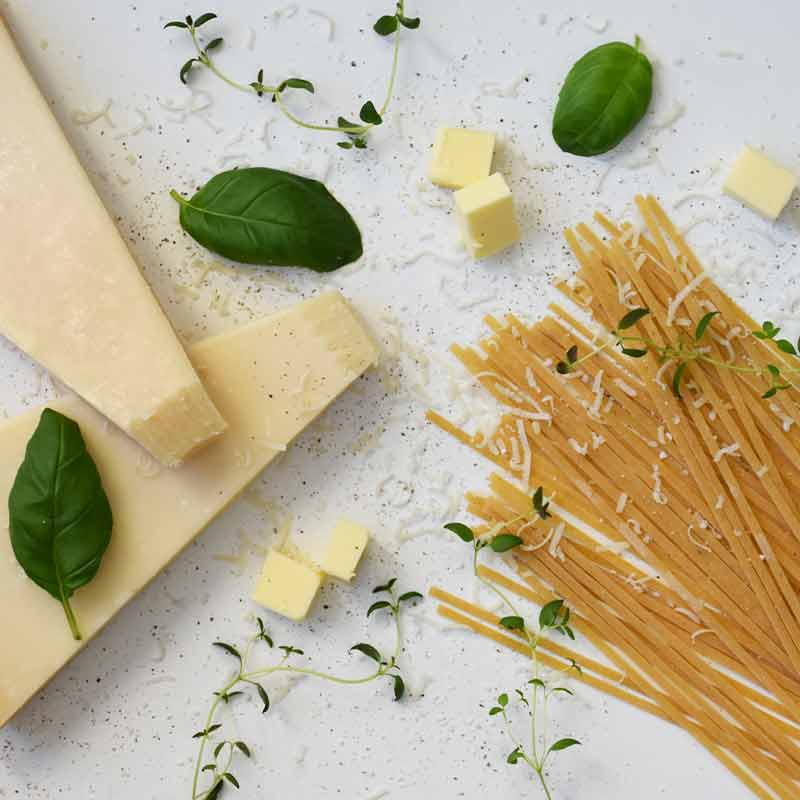
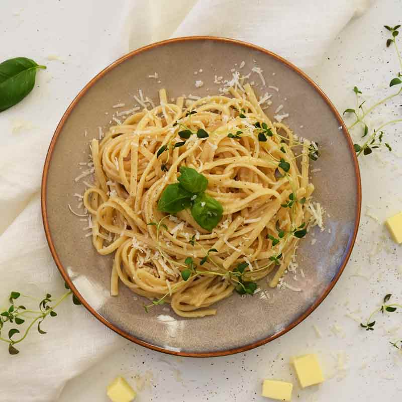

Pasta Cacio e Pepe

Pasta Cacio e Pepe er en nem og lækker italiesk pastaret - som næsten ingen tid tager at lave.
En enkel cremet pastaret med ostesovs og sortpeber, som smager fantastisk.
Tid: 15 minutter. Antal: 2 personer.
Ingredienser:
Ingredienser:
- 200 g Pasta Fettuccine
- 2ca. 7,5 Peberkorn
- 10 g Smør
- 1 dl Pastavand
- 70 g Pecorino, friskrevet
- 35 g Parmesan, friskrevet
- 0,5 håndfuld frisk timian
- 0,5 håndfuld frisk oregano
- sort peber, friskkværnet

Fremgangsmåde:
- Kog pastaen i en gryde med salt og vand, i 2 min. mindre end angivet på pakken.
- Kværn peberen og kom den på en tør pande og varm dem god igennem. Tilsæt smør og lad det bruse af. Skru ned indtil pastaen er færdig.
- Hæld 1 dl pastavand på panden et par minutter inden pastaen er færdig.
- Skru op for varmen og kom begge oste på panden, samt pastaen og rør rundt, indtil pastaen er vel tilberedt, ostende er smeltet og konsistensen er cremet.
- Anret pastaen med et godt drys grønne krydderurter og friskkværnet peber.
